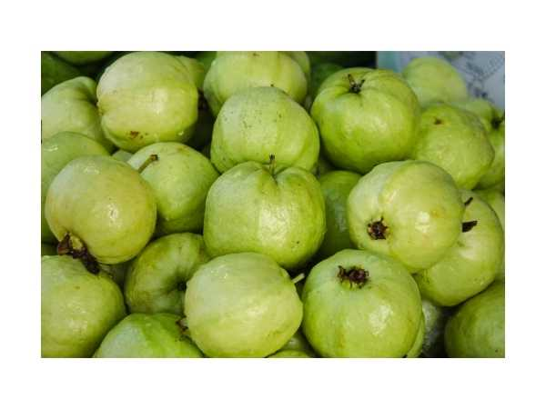

Psidium guajava
Common Names: Native Guava, Desi Guava, Common Guava, Apple of the Tropics
Local Name: Koiya (Tamil), Amrood (Hindi), Jaamapandu (Telugu), Perala (Malayalam)
Family: Myrtaceae
Origin: Central America and Mexico; naturalized across India for centuries
Plant Type: Perennial evergreen tree
Variety: Traditional seedling type — small to medium fruit, intense aromatic flavour, seedy
Average Lifespan: 30–50+ years
| Growth Habit | Hardy, spreading evergreen tree; extremely adaptable and resilient; often grows semi-wild |
| Plant Size | 4–10 meters tall; canopy 5–8 meters wide |
| Leaves | Opposite, oblong-elliptic, 8–15 cm long, dull green with prominent parallel veins; aromatic when crushed |
| Flowers | White, 4–5 petaled, 2–3 cm across with numerous prominent stamens; borne on new growth |
| Flower Characteristics | Fragrant; attract bees; bloom on current season's growth; year-round in tropics |
| Fruit | Small to medium, 50–150g, round to pear-shaped; thin skin, soft aromatic flesh with intense guava flavour; many hard seeds |
| Fruit Color | Green turning yellow when ripe; flesh white to light pink |
| Seed Characteristics | Numerous small hard seeds throughout flesh; edible but crunchy |
| Root System | Shallow, extensive fibrous root system; can sucker prolifically |
| Climate | Tropical to subtropical; extremely adaptable; tolerates heat and some cold |
| Temperature Range | 15–40°C; tolerates up to 45°C; brief frost to −2°C |
| Rainfall Requirement | 600–2500 mm annually; very drought-tolerant once established |
| Soil Type | Extremely adaptable; grows in poor, sandy, clay, or rocky soils |
| Soil pH Preference | 4.5–8.0 (very tolerant) |
| Sun Requirement | Full sun preferred; tolerates partial shade |
| Spacing | 5–8 meters between trees |
| Irrigation Method | Minimal irrigation needed; very drought-hardy |
| Water Requirement | Low; thrives with minimal care once established |
| Can it Grow in Pots? | Yes, in 25–30 liter pots; will remain smaller but still fruits |
| Fertilizer Schedule | 2–3 times per year; thrives even without fertilization |
| Recommended Organic Fertilizers | FYM, compost, neem cake; tree is very low-maintenance |
| Pesticide Frequency | Minimal; native varieties are naturally hardy |
| Recommended Organic Pesticides | Neem oil, fruit fly traps; fruit bagging for clean fruit |
| Mulching Practice | Optional; tree is self-sufficient with leaf litter |
| Training System | Natural spreading form; can be trained to open center |
| Pruning Time | After harvest; remove suckers regularly |
| How to Prune | Remove root suckers; thin interior for airflow; tip-prune for branching; responds well to hard pruning |
| Common Pests | Fruit fly, guava moth, bark-eating caterpillar, mealybug |
| Common Diseases | Guava wilt, anthracnose, fruit rot; native types generally more resistant |
| Disease Prevention & Remedies | Good drainage, remove infected material; native types have natural disease resistance |
| Flowering Months | Year-round in tropics; main flushes in spring and monsoon |
| Fruiting Season | Year-round; peak quality in winter (India) |
| Days to Harvest | 90–120 days from flowering; seedlings fruit in 2–4 years |
| Harvest Indicators | Fruit turns yellow; softens; strong characteristic guava aroma; falls when fully ripe |
| Average Yield per Plant | 30–80 kg per tree per year (mature) |
| Pollination Type | Self-fertile; insect-pollinated |
| Pollination Notes | Bees are primary pollinators; self-fertile — single tree produces abundantly |
| Pollination Details | Self-fertile; bees and wind assist pollination |
| Propagation by Seeds | Very easy; seeds germinate in 2–3 weeks; seedlings variable but vigorous; fruit in 2–4 years |
| Propagation by Cuttings | Air layering successful; stem cuttings with rooting hormone |
| Propagation by Grafting | Native seedlings used as rootstock for grafting improved varieties |
| Water Usage | Very low; one of the most drought-tolerant tropical fruit trees |
| Soil Conservation Practices | Extensive root system holds soil; grows on degraded land |
| Organic Practices Used | Requires virtually no chemical inputs; ideal for organic and subsistence farming |
| Companion Plants | Vegetables, legumes, herbs as intercrops |
| Biodiversity Benefits | Major food source for birds, bats, and wildlife; flowers support pollinators; shade tree |
| Commercial Production Regions | Throughout India, Southeast Asia, Central and South America, Africa — one of the most widely grown tropical fruits |
| Market Uses | Fresh fruit, street food, local markets, processing |
| Processing Uses | Juice, nectar, jam, jelly, guava cheese, dried guava, guava paste (goiabada) |
| Market Value (Approx.) | ₹20–60 per kg; affordable staple fruit across India |
| Symbolism | Called "apple of the tropics" and "poor man's apple"; deeply embedded in Indian food culture |
| Traditional Uses | Guava leaf tea used in Ayurveda and Siddha medicine; fruit eaten with salt and chili as street food; leaves used for toothache |
| Calories | 68 kcal per 100g |
| Dietary Fiber | 5.4 g per 100g |
| Vitamin C | 228 mg per 100g (4× more than oranges) |
| Vitamin A | 624 IU per 100g |
| Iron | 0.26 mg per 100g |
| Potassium | 417 mg per 100g |
| Antioxidants | Polyphenols, flavonoids, carotenoids, quercetin, gallic acid |
| Other Key Nutrients | Folate, manganese, copper, niacin, pantothenic acid, magnesium |
| Anxiety & Sleep | Guava leaf tea has mild sedative and calming properties |
| Immune Support | Exceptionally high Vitamin C — one of the richest fruit sources |
| Anti-inflammatory Properties | Leaf extracts show significant anti-inflammatory, antimicrobial, and antidiabetic activity |
| Heart Health | High potassium and fiber support cardiovascular health; may lower blood pressure and cholesterol |
| Digestive Health | Guava leaf tea clinically proven to help manage diarrhoea and blood sugar; high fiber aids digestion |
Disclaimer: Information provided is for educational purposes only and not a substitute for medical advice.
Add your field observations here.